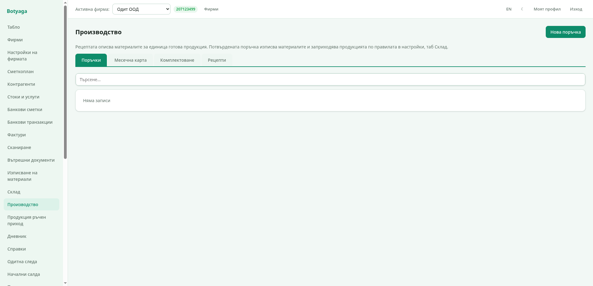

Производство и комплектоване
По рецепти, месечни карти, ръчен приход, комплектоване.
По рецепти
Рецептата задава изходящ артикул и съставки (норма, разход). Поръчка за производство масштабира рецептата и при потвърждение се осчетоводява през счетоводната сметка на артикула (Дт 303/Кт clearing). Поръчките се закачат към месечна карта, за да се разпределят върху тях преките/общите разходи в края на месеца; копирай дава нов запис по рецепта с днешна дата.
Месечна карта
Вид фактическо производство: материали от 601xx, преки 602xx–609xx, дял общи, незавършено производство (сума/%), разпределение по количество×коефициент или ръчна сума. Вид по рецепти: разпределение върху закачени поръчки.
Ръчен приход и комплектоване
Ръчен приход за производство по поръчка без рецепта с незавършено производство. Комплектоване (стоки 304 / продукция 303) е пакет по рецепта без производствени разходи: стойността на съставките се прехвърля към комплекта.
Всяко производство има PDF протокол и прикачени файлове.
